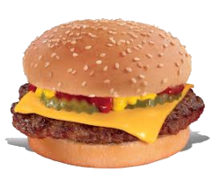

Hor Dog Americano
Ingredientes:
1 Salsicha estilo americano
2 fatias de pão de hot dog
Molho de mostarda
Modo de fazer:
Cozinhar a salsicha
Montar o lanche com a salsicha e o molho de mostarda
|  |
Cheese Burguer Ingredientes:
Modo de fazer:
|
| |
Hor Dog Americano Ingredientes: |
 |